<
Esta obra está bajo una licencia Creative Commons Reconocimiento-NoComercial-CompartirIgual 3.0 Unported.
Índice
Desinstalación [8](#desinstalación)
DNIe (DNI Electrónico) [20](#dnie-dni-electrónico)
Otros certificados [27](#otros-certificados)
Introducción
El Cliente de Firma es una herramienta de Firma Electrónica que funciona en forma de Applet de Java integrado en una página Web mediante JavaScript.
El Cliente hace uso de los certificados digitales X.509 y de las claves privadas asociadas a los mismos que estén instalados en el repositorio o almacén de claves y certificados (keystore) del navegador web (Internet Explorer, Mozilla, Firefox) o el sistema operativo así como de los que estén en dispositivos (tarjetas inteligentes, dispositivos USB) configurados en el mismo (el caso de los DNI-e).
El Cliente de Firma, como su nombre indica, es una aplicación que se ejecuta en cliente (en el ordenador del usuario, no en el servidor Web). Esto es así para evitar que la clave privada asociada a un certificado tenga que “salir” del contenedor del usuario (tarjeta, dispositivo USB o navegador) ubicado en su PC. De hecho, nunca llega a salir del navegador, el Cliente le envía los datos a firmar y éste los devuelve firmados.
El Cliente de Firma contiene las interfaces y componentes web necesarios para la realización de los siguientes procesos (además de otros auxiliares como cálculos de hash, lectura de ficheros, etc…):
-
Firma de formularios Web.
-
Firma de datos y ficheros.
-
Multifirma masiva de datos y ficheros.
-
Cofirma (CoSignature) Multifirma al mismo nivel.
-
Contrafirma (CounterSignature) Multifirma en cascada.
Como complemento al cliente de firma, se encuentra un cliente de cifrado que nos permite realizar las funciones de encriptación y desencriptación de datos atendiendo a diferentes algoritmos y configuraciones. Además permite la generación de sobres digitales.
Objetivos
El objetivo del presente documento es detallar un posible uso típico del Cliente @firma dentro de una aplicación Web, tanto desde un punto de vista del entorno de ejecución como desde el directo por parte del usuario.
Requisitos Mínimos
Puede consultar matrices completas de compatibilidad, requisitos mínimos y otras información de utilidad respecto a entorno operativo en el manual del integrador del Cliente @firma.
Guía de Uso.
El componente de firma es una aplicación cliente de Firma Electrónica que se ejecuta en el PC del usuario. Está basado en Applets Java, por lo que es necesario tener instalada la máquina virtual de Java, que será el entorno donde se ejecutará dicha aplicación.
Básicamente, el componente recibe datos y los devuelve firmados, utilizando para ello los certificados instalados en el almacén de certificados (keystore) del navegador donde se esté ejecutando en ese momento.
La razón por la que se ejecuta en el cliente es porque la codificación de la firma electrónica se efectúa en el ordenador del usuario, utilizando la clave privada del certificado seleccionado, que reside en su PC. Si su certificado reside en una tarjeta inteligente (DNIe) o tokenUSB, estos son cargados automáticamente en el almacén de certificados a través de los controladores (drivers) de los dispositivos, por lo que serán accesibles desde el cliente de firma.
Instalación
Durante la carga del Cliente se comprueban las dependencias en cuanto a entorno operativo del Cliente @firma. Y en caso de detectarse alguna necesidad se procede a su instalación (consulte el Manual del Integrador del Cliente @firma para más información). En estos casos:
1 – Se informa del inicio de la instalación del Cliente de Firma de @firma.
<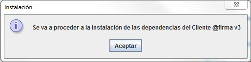
2 – El proceso de instalación muestra el acuerdo de licencia, informando de las Condiciones de Uso del componente, las cuales deberán ser aceptadas para continuar con la instalación.
<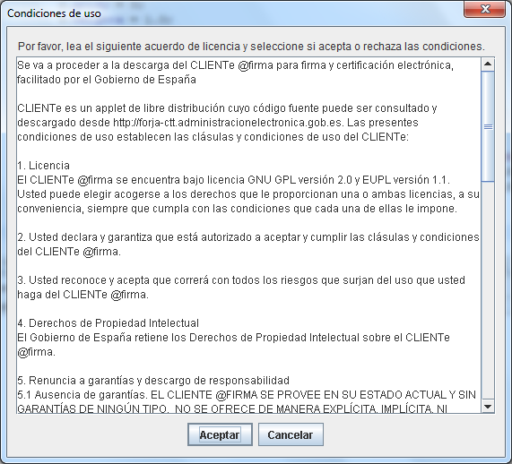
3 – Se notifica de la finalización de la instalación y se recomienda reiniciar los navegadores.
<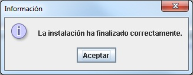
Una vez cargado, si usamos el DNI-e, el navegador nos mostrará la siguiente ventana:
<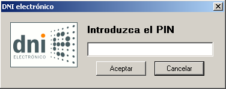
<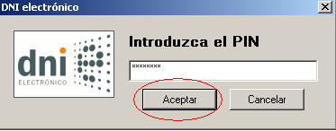
En la cual deberemos introducir nuestro PIN y pulsar sobre el botón “Aceptar”.
En la siguiente ventana, el navegador nos mostrará el listado de certificados instalados en el navegador, seleccionaremos el certificado con el que nos queramos identificar, en el caso del DNIe el listado como “Apellidos, Nombre (AUTENTICACIÓN)” y pulsaremos sobre el botón “Aceptar”
<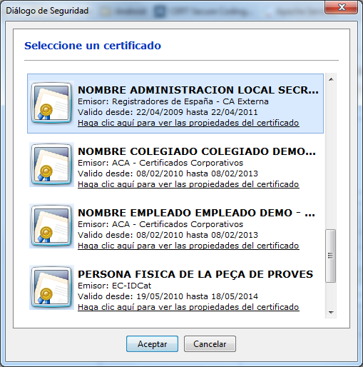
Es posible que el navegador nos vuelva a pedir introducir el PIN del DNIe, una vez hecho pulsaremos “Aceptar” y tras el sistema realizar las comprobaciones pertinentes habremos accedido al aplicativo.
Desinstalación
No existe un mecanismo automático para la desinstalación de las dependencias del Cliente ya que estas no pueden eliminarse durante la ejecución de la máquina virtual Java.
No obstante, es posible realizar una desinstalación manual de los componentes del Cliente. Para ello es necesario eliminar los siguientes ficheros del directorio ENDORSED de su entorno de ejecución de Java (JRE):
-
serializer-2.7.1.jar / serializer.jar
-
xalan-2.7.1.jar / xalan.jar
-
xercesImpl-2.9.1.jar / xerces.jar
-
xml-apis-1.3.03.jar / xml-apis.jar
-
afirma_5_java_5.jar
Para determinar la situación del directorio ENDORSED de su RE consulte la documentación del fabricante: http://docs.oracle.com/javase/6/docs/technotes/guides/standards/
Usualmente, suele estar dentro de un subdirectorio del directorio de bibliotecas del JAVA_HOME:
-
%JAVA_HOME%\lib\endorsed (Windows)
-
$JAVA_HOME/lib/endorsed (Linux y Mac OS X)
Instalación de Certificados.
Para el uso del componente de firma, es necesario disponer de un certificado electrónico, el cual puede encontrarse almacenado:
-
En el Navegador. En el almacén de certificados del navegador dentro de la pestaña "personal" aparecen los que poseen clave privada y dentro de la pestaña "otras personas" aparecen los de clave pública.
-
Tarjeta inteligente. El DNI electrónico es un dispositivo seguro de creación de firma conforme a la norma CWA 14169. Esta norma está reconocida por la Unión Europea y se considera que la firma electrónica realizada con el DNI electrónico es equivalente a una firma manuscrita a efectos legales. Estas firmas son las más seguras porque la clave privada nunca sale de la tarjeta inteligente, por lo que no puede ser copiada por terceros.
Es importante recordar, que cuando se instala un certificado, el mismo queda instalado únicamente para el navegador o sistema en el que se realice dicha instalación, siendo necesario realizar la misma acción si se quisiera disponer del mismo certificado en otro navegador que utilice un almacén de certificados distinto.
A continuación se detalla los diferentes pasos a seguir para la instalación del certificado según el lugar de almacenamiento de los mismos:
Instalación de certificados software en Internet Explorer
En primer lugar, en el menú superior del navegador, seleccionamos la opción “Herramientas” y a continuación hacemos clic sobre la opción “Opciones de Internet”.
<
A continuación seleccionamos la opción “Certificados”, dentro de la pestaña “Contenido”
<
Continuamos seleccionando la opción “Importar”, se nos abrirá el “Asistente para importación de certificados”.
<
<
Pulsaremos “Siguiente” en la primera ventana del asistente, tras lo cual, nos pedirá que seleccionemos la ubicación del certificado que deseamos instalar, para lo cual, pulsaremos el botón “Examinar...”.
Se nos abrirá una ventana en la cual tendremos que buscar el certificado que deseamos instalar, una vez encontrado, seleccionaremos el certificado y pulsaremos sobre el botón “Abrir”.
<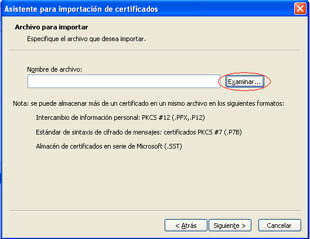
<
Tras seleccionar el botón “Siguiente”, en la siguiente ventana el asistente nos pedirá que introduzcamos la contraseña usada en el cifrado del certificado, introducimos la clave y pulsamos sobre el botón “Siguiente”
<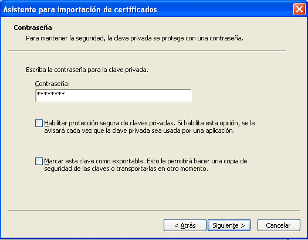
En la siguiente ventana, el asistente nos pedirá que seleccionemos el almacén en el cual se guardará el certificado, seleccionaremos la opción “Colocar todos los certificados en el siguiente almacén”.
Pulsaremos sobre el botón “Examinar”, seleccionaremos la carpeta “Personal” y pulsaremos el botón “Siguiente”.
<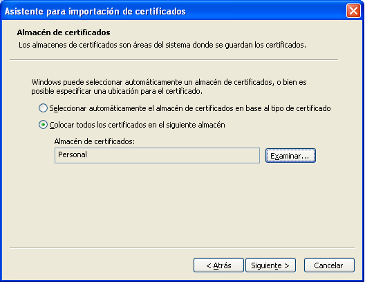
<
Tras este paso, el asistente nos informará de que el certificado ha quedado importado correctamente.


Instalación de certificados software en Mozilla Firefox
En primer lugar, en el menú superior del navegador, seleccionamos la opción “Herramientas” y a continuación hacemos clic sobre la opción “Opciones”.
<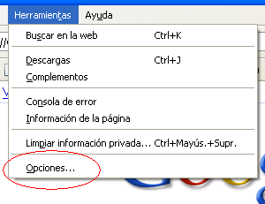
A continuación seleccionamos la pestaña “Avanzado” del menú superior de la nueva ventana, tras lo cual, seleccionamos la subpestaña “Cifrado”, en la que seleccionaremos la opción “Ver certificados”
<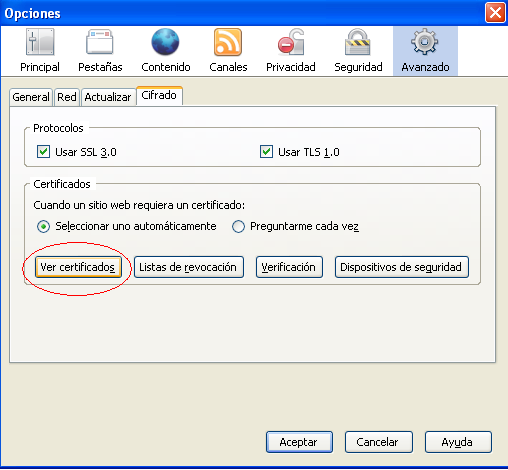
Continuamos seleccionando la opción “Importar”, se nos abrirá una ventana en la cual tendremos que buscar el certificado que deseamos instalar, una vez encontrado, seleccionaremos el certificado y pulsaremos sobre el botón “Abrir”.
<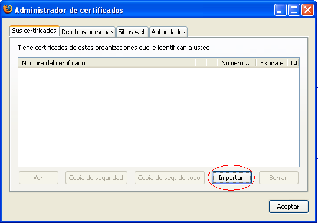
<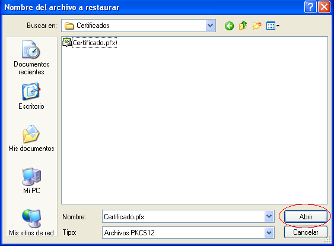
El navegador nos pedirá que introduzcamos la contraseña usada en el cifrado del certificado, introducimos la clave y pulsamos sobre el botón “Aceptar”.
<
Una vez realizado este paso, el sistema nos informará con un mensaje que el certificado ha quedado instalado de forma satisfactoria.

Instalación de certificados software en Google Chrome y Apple Safari
Los navegadores Web Google Chrome y Apple Safari no disponen de un almacén de certificados propio, en su lugar utilizan el almacén de certificados del sistema operativo que utilice el usuario. Esto es:
- En Microsoft Windows: El almacén de certificados que Internet Explorer.
-
En Linux: El almacén de certificados de Mozilla Firefox.
-
En Solaris / OpenSolaris: El almacén de certificados de Mozilla Firefox.
-
En Mac OS X: El almacén de certificados del sistema operativo.
Si nuestro sistema operativo es Microsoft Windows deberemos seguir los pasos descritos en el apartado “Instalación de certificados software en Internet Explorer“.
Si nuestro sistema operativo es Linux o Solaris se importarán los certificados a través de Mozilla Firefox tal como se describe en el apartado “Instalación de certificados software en Mozilla Firefox”.
Si nuestro sistema operativo es Mac OS X deberán instalarse los certificados tal como se describe en el apartado “Instalación de certificados software en el almacén de Mac OS X”.
Instalación de certificados software en el almacén de Mac OS X
Para instalar un certificado en Mac OS X sólo deberemos hacer doble clic sobre el certificado para solicitar su instalación y seleccionar el almacén de certificados del sistema. Seguidamente, insertaremos la contraseña de usuario del sistema para finalizar la importación.
<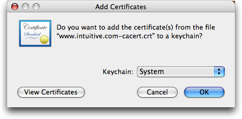
<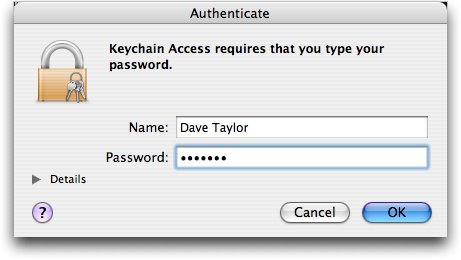
Aunque este proceso de instalación de certificados es el común en Mac OS X, pueden existir cambios entre cada una de sus versiones. Para conocer los detalles de cada versión acuda a la página Web de soporte de su sistema operativo. Para Mac OS X 10.6 es:
http://docs.info.apple.com/article.html?path=Mac/10.6/es/9082.html
Uso de certificados desde tarjetas inteligentes
DNIe (DNI Electrónico)
Para la utilización del DNI electrónico es necesario contar determinados elementos hardware y software que nos van a permitir el acceso al chip de la tarjeta y, por tanto, la utilización de los certificados contenidos en él.
a) Elementos hardware
El DNI electrónico requiere el siguiente equipamiento físico:
-
Un Ordenador personal (Intel -a partir de Pentium III- o tecnología similar).
-
Un lector de tarjetas inteligentes que cumpla el estándar ISO 7816. Existen distintas implementaciones, bien integrados en el teclado, bien externos (conectados vía USB) o bien a través de una interfaz PCMCIA.
Para elegir un lector que sean compatible con el DNI electrónico verifique que, al menos,
-
Cumpla el estándar ISO 7816 (1, 2 y 3).
-
Soporta tarjetas asíncronas basadas en protocolos T=0 (y T=1).
-
Soporta velocidades de comunicación mínimas de 9.600 bps.
-
Soporta los estándares:
-
API PC/SC (Personal Computer/Smart Card)
-
CSP (Cryptographic Service Provider, Microsoft)
-
API PKCS#11
-
b) Elementos software
** Sistemas operativos**
El DNI electrónico puede operar en diversos entornos:
-
Microsoft Windows
-
Linux
-
Oracle Solaris
-
Apple OS X
** Navegadores**
El DNI electrónico es compatible con todos los navegadores:
-
Microsoft Internet Explorer (versión 7.0 o superior)
-
Mozilla Firefox
-
Google Chrome
Controladores / Módulos criptográficos
Para poder interaccionar adecuadamente con las tarjetas criptográficas en general y con el DNI electrónico en particular, el equipo ha de tener instalados unas "piezas" de software denominadas módulos criptográficos.
-
En un entorno Microsoft Windows, el equipo debe tener instalado un servicio que se denomina "Cryptographic Service Provider" (CSP).
-
En los entornos UNIX / Linux o MAC podemos utilizar el DNI electrónico a través de un módulo criptográfico denominado PKCS#11.
Tanto el CSP como el PKCS#11 específico para el DNI electrónico podrán obtenerse en el Área de Descargas de la web del DNI-e, accediendo a la siguiente URL: http://www.dnielectronico.es/descargas/index.html, o en el sitio Web de OpenDNIe (recomendado para sistemas Linux y Solaris): http://opendnie.cenatic.es/
Opcionalmente puede acceder a https://zonatic.usatudni.es/aplicaciones/asistente-dnie, para la descarga de un instalador sencillo y accesible del controlador.
Si optamos por el área de descargas de www.dnielectronico.es deberemos seleccionar la primera opción si tenemos un Sistema Operativo Windows o la segunda en caso de tener otro Sistema Operativo.
<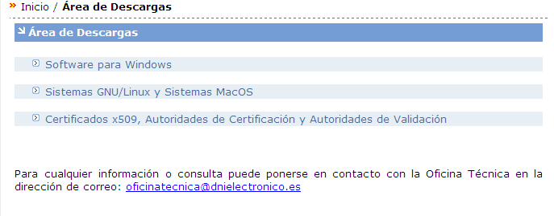
En la siguiente pantalla seleccionaremos la opción “Sistemas Windows. Compatible con Vista”, tras lo cual se nos descargara el software. Seleccionaremos “Guardar” y elegiremos la carpeta deseada donde queremos que sea descargado.
<
<
Una vez descargado el fichero con la nomenclatura “DNIe_vx_j_y.zip” lo descomprimiremos y accederemos al fichero “DNIe_vx_j_y.exe”.
El software se instalará automáticamente y se le pedirá reiniciar el equipo.
<
<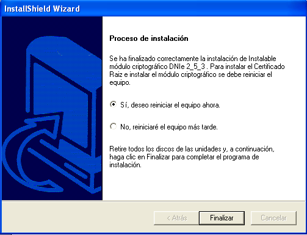
Es posible, dependiendo de la configuración de su navegador, que nos aparezca la siguiente ventana:
<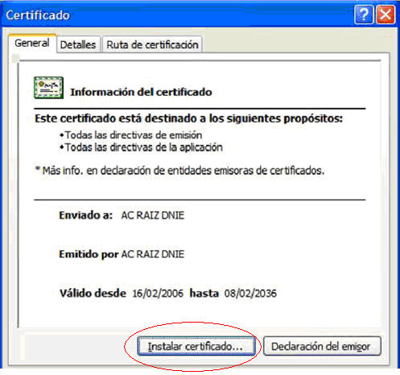
Se nos solicitará, por tanto que instalemos en el certificado raíz del DNIe, para ello deberemos seleccionar sobre “Instalar certificado...”
<
Pulsaremos sobre el botón “Siguiente”
<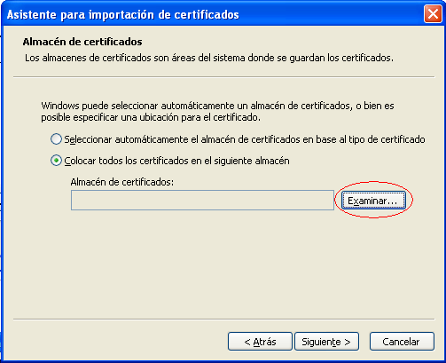
Seleccionamos la opción “Colocar todos los certificados en el siguiente almacén” y pulsamos sobre el botón “Examinar...”
<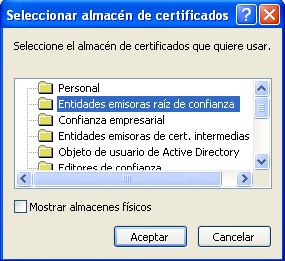
Seleccionaremos el almacén de certificados “Entidades Emisoras Raíz de Confianza”
En la siguiente ventana seleccionaremos la opción “Finalizar”
<
Si nos aparece la siguiente advertencia, seleccionaremos “Si” para permitir que la autoridad raíz del DNIe, se instale en el navegador y se pueda así establecer la cadena de confianza de certificación.
Tras lo cual, el software quedará instalado y listo para su uso.
Adicionalmente, para operar con un lector de tarjetas inteligentes, será necesario instalar un driver que, normalmente, se distribuye con el propio lector.
Nota: Para hacer uso del software de cambio de PIN virtual, deberá tener instalado en el equipo la versión JAVA 1.5 o superior.
Para más información puede acudir a la página http://www.dnielectronico.es o contactar con el Servicio de Atención al Ciudadano en el teléfono 900 364 463 o en el correo sac@dnielectronico.es


Otros certificados
En el caso de hacer uso de otro certificado desde una tarjeta inteligente deberá consultar con la entidad emisora del mismo para que le indique su forma de uso.
Resolución de Problemas
Para la resolución de problemas relacionados con el uso del Cliente @firma, consulte la Guía de Incidencias del Cliente o el apartado 7 FAQ. de este mismo documento.
Glosario de términos
Firma electrónica
Es el conjunto de datos, en forma electrónica, anejos a otros datos electrónicos o asociados funcionalmente con ellos, utilizados como medio para identificar formalmente al autor o a los autores del documento que la recoge.
XML Digital Signature (XMLDSig)
Es una recomendación del W3C que define una sintaxis XML para la firma digital
XML Advanced Signature (XAdES)
Es un conjunto de extensiones a las recomendaciones XML-DSig haciéndolas adecuadas para la firma electrónica avanzada.
RSA
Es un sistema criptográfico de clave pública desarrollado en 1977. En la actualidad, RSA es el primer y más utilizado algoritmo de este tipo y es válido tanto para cifrar como para firmar digitalmente.
XML
Es un metalenguaje extensible de etiquetas desarrollado por el World Wide Web Consortium (W3C). Es una simplificación y adaptación del SGML y permite definir la gramática de lenguajes específicos (de la misma manera que HTML es a su vez un lenguaje definido por SGML). Por lo tanto XML no es realmente un lenguaje en particular, sino una manera de definir lenguajes para diferentes necesidades. Algunos de estos lenguajes que usan XML para su definición son XHTML, SVG, MathML.
Office Open XML (OOXML)
Es un formato de archivo abierto y estándar cuyas extensiones más comunes son .docx, .xlsx y .pptx. Se le utiliza para representar y almacenar hojas de cálculo, diagramas, presentaciones y documentos de texto. Un archivo Office Open XML contiene principalmente datos basados en el lenguaje de marcado XML, comprimidos en un contenedor .zip específico.
Open Document Format (ODF)
Es un formato de fichero estándar para el almacenamiento de documentos ofimáticos tales como hojas de cálculo, memorandos, gráficas y presentaciones. Aunque las especificaciones fueron inicialmente elaboradas por Sun, el estándar fue desarrollado por el comité técnico para Open Office XML de la organización OASIS y está basado en un esquema XML inicialmente creado e implementado por la suite ofimática OpenOffice.org (ver OpenOffice.org XML).
ZIP
Es un formato de almacenamiento sin pérdida, muy utilizado para la compresión de datos como imágenes, programas o documentos.
Es un formato de almacenamiento de documentos, desarrollado por la empresa Adobe Systems. Este formato es de tipo compuesto (imagen vectorial, mapa de bits y texto).
SHA
Es un sistema de funciones hash criptográficas relacionadas de la Agencia de Seguridad Nacional de los Estados Unidos y publicadas por el National Institute of Standards and Technology (NIST). El primer miembro de la familia fue publicado en 1993 es oficialmente llamado SHA. Sin embargo, hoy día, no oficialmente se le llama SHA-0 para evitar confusiones con sus sucesores. Dos años más tarde el primer sucesor de SHA fue publicado con el nombre de SHA-1. Existen cuatro variantes más que se han publicado desde entonces cuyas diferencias se basan en un diseño algo modificado y rangos de salida incrementados: SHA-224, SHA-256, SHA-384, y SHA-512 (llamándose SHA-2 a todos ellos).
PKCS
Se refiere a un grupo de estándares de criptografía de clave pública concebidos y publicados por los laboratorios de RSA en California. A RSA Security se le asignaron los derechos de licenciamiento para la patente de algoritmo de clave asimétrica RSA y adquirió los derechos de licenciamiento para muchas otras patentes de claves.
W3C
Es un consorcio internacional que produce recomendaciones para la World Wide Web. Está dirigida por Tim Berners-Lee, el creador original de URL (Uniform Resource Locator, Localizador Uniforme de Recursos), HTTP (HyperText Transfer Protocol, Protocolo de Transferencia de HiperTexto) y HTML (Lenguaje de Marcado de HiperTexto) que son las principales tecnologías sobre las que se basa la Web.
OpenOffice.org
Es una suite ofimática libre (código abierto y distribución gratuita) que incluye herramientas como procesador de textos, hoja de cálculo, presentaciones, herramientas para el dibujo vectorial y base de datos. Está disponible para varias plataformas, tales como Microsoft Windows, GNU/Linux, BSD, Solaris y Mac OS X. Soporta numerosos formatos de archivo, incluyendo como predeterminado el formato estándar ISO/IEC OpenDocument (ODF), entre otros formatos comunes. A febrero de 2010, OpenOffice soporta más de 110 idiomas.
Base64
Es un sistema de numeración posicional que usa 64 como base. Es la mayor potencia de dos que puede ser representada usando únicamente los caracteres imprimibles de ASCII. Esto ha propiciado su uso para codificación de correos electrónicos, PGP y otras aplicaciones. Todas las variantes famosas que se conocen con el nombre de Base64 usan el rango de caracteres A-Z, a-z y 0-9 en este orden para los primeros 62 dígitos, pero los símbolos escogidos para los últimos dos dígitos varían considerablemente de unas a otras. Otros métodos de codificación como UUEncode y las últimas versiones de binhex usan un conjunto diferente de 64 caracteres para representar 6 dígitos binarios, pero éstos nunca son llamados Base64.
ASN.1
Es una norma para representar datos independientemente de la máquina que se esté usando y sus formas de representación internas. Es un protocolo de nivel de presentación en el modelo OSI.
Autoridad de Certificación (CA)
Es una entidad de confianza, responsable de emitir y revocar los certificados digitales o certificados, utilizados en la firma electrónica, para lo cual se emplea la criptografía de clave pública. Jurídicamente es un caso particular de Prestador de Servicios de Certificación.
Certificado Digital
Es un documento digital mediante el cual un tercero confiable (una autoridad de certificación) garantiza la vinculación entre la identidad de un sujeto o entidad y su clave pública.
Infraestructura de Clave Pública (PKI)
Es una combinación de hardware y software, políticas y procedimientos de seguridad que permiten la ejecución con garantías de operaciones criptográficas como el cifrado, la firma digital o el no repudio de transacciones electrónicas.
FAQ.
A continuación se detallan ciertas dudas comunes que pueden surgir en el uso del Ciente @firma. Para más información y dudas adicionales consulte la Guía de Incidencias del Cliente @firma.
¿Qué certificados son reconocidos por la plataforma?
La plataforma @firma admite certificados digitales reconocidos conforme el estándar ITU-T X.509 v3, emitidos por múltiples prestadores de servicios de certificación. Todos los prestadores se encuentran inscritos en el registro de la Secretaria de Estado de Telecomunicaciones y para la Sociedad de Información del Ministerio de Industria, Turismo y Comercio de autoridades conforme a lo establecido en el artículo 30 de la Ley 59/2003, de 19 de diciembre, de firma electrónica. Los prestadores reconocidos son:
-
DNI Electrónico
-
Camerfirma
-
Izenpe
-
CATCert (Agencia Catalana de Certificación)
-
ANF AC
-
SCR (Servicio de Certificación de los Registradores)
-
ACA
-
ACCV (Autoridad de Certificación de la Comunidad Valenciana)
-
ANCERT (Agencia Notarial de Certificación)
-
FNMT (Fábrica Nacional de Moneda y Timbre)
-
Firmaprofesional
-
BANESTO CA
Si desea información más detallada sobre los certificados soportados, consulte las referencias a la “Plataforma de validación de firma electrónica @firma” en el Portal de la Administración Electrónica (http://administracionelectronica.gob.es/).
¿Cuáles son los tipos de certificados admitidos por las Administraciones?
De acuerdo con la Ley 59/2003, de Firma Electrónica, los tipos de certificados admitidos son: certificado de persona física y , certificado de persona jurídica, certificado de sello electrónico para la actuación automatizada, certificado de sede electrónica administrativa y certificado de empleado público.
Cada uno de los certificados emitidos conllevará un grado de "confianza", asociado a los diferentes niveles de aseguramiento bajo los que se emitan, debido a los requisitos técnicos y de seguridad que estos niveles llevan asociados.
¿Qué información posee un certificado digital?
Un certificado digital es, en realidad, una clave pública, con cierta información adjunta, como el nombre del propietario, el periodo de validez de la clave, etc, permitiendo:
La autenticación del usuario.
La confidencialidad del mensaje.
La integridad del documento.
El no repudio.
Los certificados digitales sólo son útiles si existe alguna Autoridad Certificadora (Certification Authority o CA) que los valide, ya que si uno se certifica a sí mismo no hay ninguna garantía de que su identidad sea la que anuncia.
El formato de certificados X.509 es un estándar del ITU-T (International Telecommunication Union-Telecommunication Standarization Sector) y el ISO/IEC (International Standards Organization / International Electrotechnical Commission).
Los elementos del formato de un certificado X.509 v3 son:
-
Versión. El campo de versión contiene el número de versión del certificado codificado.
-
Número de serie del certificado. Este campo es un entero asignado por la autoridad certificadora. Cada certificado emitido por una CA debe tener un número de serie único.
-
Identificador del algoritmo de firmado. Este campo identifica el algoritmo empleado para firmar el certificado.
-
Nombre del emisor. Este campo identifica la CA que ha firmado y emitido el certificado.
-
Periodo de validez. Este campo indica el periodo de tiempo durante el cual el certificado es válido y la CA está obligada a mantener información sobre el estado del mismo.
-
Nombre del sujeto. Este campo identifica la identidad cuya clave pública está certificada en el campo siguiente. El nombre debe ser único para cada entidad certificada por una CA dada, aunque puede emitir más de un certificado con el mismo nombre si es para la misma entidad.
-
Información de clave pública del sujeto. Este campo contiene la clave pública, sus parámetros y el identificador del algoritmo con el que se emplea la clave.
Creative Commons
Reconocimiento-NoComercial-CompartirIgual 3.0 Unported
Usted es libre de:
| < style="width:0.52083in;height:0.52083in" alt="share" /> | Compartir - copiar, distribuir, ejecutar y comunicar públicamente la obra |
|------------|------------------------------------------------------------|
| <
style="width:0.52083in;height:0.52083in" alt="share" /> | Compartir - copiar, distribuir, ejecutar y comunicar públicamente la obra |
|------------|------------------------------------------------------------|
| < style="width:0.52083in;height:0.52083in" alt="remix" /> | hacer obras derivadas |
style="width:0.52083in;height:0.52083in" alt="remix" /> | hacer obras derivadas |
Bajo las condiciones siguientes:
| < style="width:0.52083in;height:0.52083in" alt="by" /> | Atribución — Debe reconocer los créditos de la obra de la manera especificada por el autor o el licenciante (pero no de una manera que sugiera que tiene su apoyo o que apoyan el uso que hace de su obra). |
|------------|------------------------------------------------------------|
| <
style="width:0.52083in;height:0.52083in" alt="by" /> | Atribución — Debe reconocer los créditos de la obra de la manera especificada por el autor o el licenciante (pero no de una manera que sugiera que tiene su apoyo o que apoyan el uso que hace de su obra). |
|------------|------------------------------------------------------------|
| < style="width:0.52083in;height:0.52083in" alt="nc" /> | NoComercial — No puede utilizar esta obra para fines comerciales. |
| < style="width:0.52083in;height:0.52083in" alt="sa" /> | Compartir bajo la Misma Licencia — Si altera o transforma esta obra, o genera una obra derivada, sólo puede distribuir la obra generada bajo una licencia idéntica a ésta. |
style="width:0.52083in;height:0.52083in" alt="nc" /> | NoComercial — No puede utilizar esta obra para fines comerciales. |
| < style="width:0.52083in;height:0.52083in" alt="sa" /> | Compartir bajo la Misma Licencia — Si altera o transforma esta obra, o genera una obra derivada, sólo puede distribuir la obra generada bajo una licencia idéntica a ésta. |
Entendiendo que:
Renuncia — Alguna de estas condiciones puede no aplicarse si se obtiene el permiso del titular de los derechos de autor
Dominio Público — Cuando la obra o alguno de sus elementos se hallen en el dominio público según la ley vigente aplicable, esta situación no quedará afectada por la licencia.
Otros derechos — Los derechos siguientes no quedan afectados por la licencia de ninguna manera:
Los derechos derivados de usos legítimos u otras limitaciones reconocidas por ley no se ven afectados por lo anterior.
Los derechos morales del auto;
Derechos que pueden ostentar otras personas sobre la propia obra o su uso, como por ejemplo derechos de imagen o de privacidad.
Aviso — Al reutilizar o distribuir la obra, tiene que dejar muy en claro los términos de la licencia de esta obra. La mejor forma de hacerlo es enlazar a esta página.
Licencia
LA OBRA O LA PRESTACIÓN (SEGÚN SE DEFINEN MÁS ADELANTE) SE PROPORCIONA BAJO LOS TÉRMINOS DE ESTA LICENCIA PÚBLICA DE CREATIVE COMMONS (CCPL O LICENCIA). LA OBRA O LA PRESTACIÓN SE ENCUENTRA PROTEGIDA POR LA LEY ESPAÑOLA DE PROPIEDAD INTELECTUAL Y/O CUALESQUIERA OTRAS NORMAS QUE RESULTEN DE APLICACIÓN. QUEDA PROHIBIDO CUALQUIER USO DE LA OBRA O PRESTACIÓN DIFERENTE A LO AUTORIZADO BAJO ESTA LICENCIA O LO DISPUESTO EN LA LEY DE PROPIEDAD INTELECTUAL.
MEDIANTE EL EJERCICIO DE CUALQUIER DERECHO SOBRE LA OBRA O LA PRESTACIÓN, USTED ACEPTA Y CONSIENTE LAS LIMITACIONES Y OBLIGACIONES DE ESTA LICENCIA, SIN PERJUICIO DE LA NECESIDAD DE CONSENTIMIENTO EXPRESO EN CASO DE VIOLACIÓN PREVIA DE LOS TÉRMINOS DE LA MISMA. EL LICENCIADOR LE CONCEDE LOS DERECHOS CONTENIDOS EN ESTA LICENCIA, SIEMPRE QUE USTED ACEPTE LOS PRESENTES TÉRMINOS Y CONDICIONES.
1. Definiciones
- La obra es la creación literaria, artística o científica ofrecida bajo los términos de esta licencia.
-
En esta licencia se considera una prestación cualquier interpretación, ejecución, fonograma, grabación audiovisual, emisión o transmisión, mera fotografía u otros objetos protegidos por la legislación de propiedad intelectual vigente aplicable.
-
La aplicación de esta licencia a una colección (definida más adelante) afectará únicamente a su estructura en cuanto forma de expresión de la selección o disposición de sus contenidos, no siendo extensiva a éstos. En este caso la colección tendrá la consideración de obra a efectos de esta licencia.
-
El titular originario es:
-
En el caso de una obra literaria, artística o científica, la persona natural o grupo de personas que creó la obra.
-
En el caso de una obra colectiva, la persona que la edite y divulgue bajo su nombre, salvo pacto contrario.
-
En el caso de una interpretación o ejecución, el actor, cantante, músico, o cualquier otra persona que represente, cante, lea, recite, interprete o ejecute en cualquier forma una obra.
-
En el caso de un fonograma, el productor fonográfico, es decir, la persona natural o jurídica bajo cuya iniciativa y responsabilidad se realiza por primera vez una fijación exclusivamente sonora de la ejecución de una obra o de otros sonidos.
-
En el caso de una grabación audiovisual, el productor de la grabación, es decir, la persona natural o jurídica que tenga la iniciativa y asuma la responsabilidad de las fijaciones de un plano o secuencia de imágenes, con o sin sonido.
-
En el caso de una emisión o una transmisión, la entidad de radiodifusión.
-
En el caso de una mera fotografía, aquella persona que la haya realizado.
-
En el caso de otros objetos protegidos por la legislación de propiedad intelectual vigente, la persona que ésta señale.
-
Se considerarán obras derivadas aquellas obras creadas a partir de la licenciada, como por ejemplo: las traducciones y adaptaciones; las revisiones, actualizaciones y anotaciones; los compendios, resúmenes y extractos; los arreglos musicales y, en general, cualesquiera transformaciones de una obra literaria, artística o científica. Para evitar la duda, si la obra consiste en una composición musical o grabación de sonidos, la sincronización temporal de la obra con una imagen en movimiento (synching) será considerada como una obra derivada a efectos de esta licencia.
-
Tendrán la consideración de colecciones la recopilación de obras ajenas, de datos o de otros elementos independientes como las antologías y las bases de datos que por la selección o disposición de sus contenidos constituyan creaciones intelectuales. La mera incorporación de una obra en una colección no dará lugar a una derivada a efectos de esta licencia.
-
El licenciador es la persona o la entidad que ofrece la obra o prestación bajo los términos de esta licencia y le concede los derechos de explotación de la misma conforme a lo dispuesto en ella.
-
Usted es la persona o la entidad que ejercita los derechos concedidos mediante esta licencia y que no ha violado previamente los términos de la misma con respecto a la obra o la prestación, o que ha recibido el permiso expreso del licenciador de ejercitar los derechos concedidos mediante esta licencia a pesar de una violación anterior.
-
La transformación de una obra comprende su traducción, adaptación y cualquier otra modificación en su forma de la que se derive una obra diferente. La creación resultante de la transformación de una obra tendrá la consideración de obra derivada.
-
Se entiende por reproducción la fijación directa o indirecta, provisional o permanente, por cualquier medio y en cualquier forma, de toda la obra o la prestación o de parte de ella, que permita su comunicación o la obtención de copias.
-
Se entiende por distribución la puesta a disposición del público del original o de las copias de la obra o la prestación, en un soporte tangible, mediante su venta, alquiler, préstamo o de cualquier otra forma.
-
Se entiende por comunicación pública todo acto por el cual una pluralidad de personas, que no pertenezcan al ámbito doméstico de quien la lleva a cabo, pueda tener acceso a la obra o la prestación sin previa distribución de ejemplares a cada una de ellas. Se considera comunicación pública la puesta a disposición del público de obras o prestaciones por procedimientos alámbricos o inalámbricos, de tal forma que cualquier persona pueda acceder a ellas desde el lugar y en el momento que elija.
-
La explotación de la obra o la prestación comprende la reproducción, la distribución, la comunicación pública y, en su caso, la transformación.
2. Límites de los derechos. Nada en esta licencia pretende reducir o restringir cualesquiera límites legales de los derechos exclusivos del titular de los derechos de propiedad intelectual de acuerdo con la Ley de propiedad intelectual o cualesquiera otras leyes aplicables, ya sean derivados de usos legítimos, tales como la copia privada o la cita, u otras limitaciones como la resultante de la primera venta de ejemplares (agotamiento).
3. Concesión de licencia. Conforme a los términos y a las condiciones de esta licencia, el licenciador concede, por el plazo de protección de los derechos de propiedad intelectual y a título gratuito, una licencia de ámbito mundial no exclusiva que incluye los derechos siguientes:
- Derecho de reproducción, distribución y comunicación pública de la obra o la prestación.
-
Derecho a incorporar la obra o la prestación en una o más colecciones.
-
Derecho de reproducción, distribución y comunicación pública de la obra o la prestación lícitamente incorporada en una colección.
-
Derecho de transformación de la obra para crear una obra derivada siempre y cuando se incluya en ésta una indicación de la transformación o modificación efectuada.
-
Derecho de reproducción, distribución y comunicación pública de obras derivadas creadas a partir de la obra licenciada.
-
Derecho a extraer y reutilizar la obra o la prestación de una base de datos.
-
Para evitar cualquier duda, el titular originario:
-
Conserva el derecho a percibir las remuneraciones o compensaciones previstas por actos de explotación de la obra o prestación, calificadas por la ley como irrenunciables e inalienables y sujetas a gestión colectiva obligatoria.
-
Renuncia al derecho exclusivo a percibir, tanto individualmente como mediante una entidad de gestión colectiva de derechos, cualquier remuneración derivada de actos de explotación de la obra o prestación que usted realice.
Estos derechos se pueden ejercitar en todos los medios y formatos, tangibles o intangibles, conocidos en el momento de la concesión de esta licencia. Los derechos mencionados incluyen el derecho a efectuar las modificaciones que sean precisas técnicamente para el ejercicio de los derechos en otros medios y formatos. Todos los derechos no concedidos expresamente por el licenciador quedan reservados, incluyendo, a título enunciativo pero no limitativo, los derechos morales irrenunciables reconocidos por la ley aplicable. En la medida en que el licenciador ostente derechos exclusivos previstos por la ley nacional vigente que implementa la directiva europea en materia de derecho sui generis sobre bases de datos, renuncia expresamente a dichos derechos exclusivos.
4. Restricciones. La concesión de derechos que supone esta licencia se encuentra sujeta y limitada a las restricciones siguientes:
- Usted puede reproducir, distribuir o comunicar públicamente la obra o prestación solamente bajo los términos de esta licencia y debe incluir una copia de la misma, o su Identificador Uniforme de Recurso (URI). Usted no puede ofrecer o imponer ninguna condición sobre la obra o prestación que altere o restrinja los términos de esta licencia o el ejercicio de sus derechos por parte de los concesionarios de la misma. Usted no puede sublicenciar la obra o prestación. Usted debe mantener intactos todos los avisos que se refieran a esta licencia y a la ausencia de garantías. Usted no puede reproducir, distribuir o comunicar públicamente la obra o prestación con medidas tecnológicas que controlen el acceso o el uso de una manera contraria a los términos de esta licencia. Esta sección 4.a también afecta a la obra o prestación incorporada en una colección, pero ello no implica que ésta en su conjunto quede automáticamente o deba quedar sujeta a los términos de la misma. En el caso que le sea requerido, previa comunicación del licenciador, si usted incorpora la obra en una colección y/o crea una obra derivada, deberá quitar cualquier crédito requerido en el apartado 4.b, en la medida de lo posible.
- Si usted reproduce, distribuye o comunica públicamente la obra o la prestación, una colección que la incorpore o cualquier obra derivada, debe mantener intactos todos los avisos sobre la propiedad intelectual e indicar, de manera razonable conforme al medio o a los medios que usted esté utilizando:
-
El nombre del autor original, o el seudónimo si es el caso, así como el del titular originario, si le es facilitado.
-
El nombre de aquellas partes (por ejemplo: institución, publicación, revista) que el titular originario y/o el licenciador designen para ser reconocidos en el aviso legal, las condiciones de uso, o de cualquier otra manera razonable.
-
El título de la obra o la prestación si le es facilitado.
-
El URI, si existe, que el licenciador especifique para ser vinculado a la obra o la prestación, a menos que tal URI no se refiera al aviso legal o a la información sobre la licencia de la obra o la prestación.
-
En el caso de una obra derivada, un aviso que identifique la transformación de la obra en la obra derivada (p. ej., "traducción castellana de la obra de Autor Original," o "guión basado en obra original de Autor Original").
Este reconocimiento debe hacerse de manera razonable. En el caso de una obra derivada o incorporación en una colección estos créditos deberán aparecer como mínimo en el mismo lugar donde se hallen los correspondientes a otros autores o titulares y de forma comparable a los mismos. Para evitar la duda, los créditos requeridos en esta sección sólo serán utilizados a efectos de atribución de la obra o la prestación en la manera especificada anteriormente. Sin un permiso previo por escrito, usted no puede afirmar ni dar a entender implícitamente ni explícitamente ninguna conexión, patrocinio o aprobación por parte del titular originario, el licenciador y/o las partes reconocidas hacia usted o hacia el uso que hace de la obra o la prestación.
- Para evitar cualquier duda, debe hacerse notar que las restricciones anteriores (párrafos 4.a y 4.b) no son de aplicación a aquellas partes de la obra o la prestación objeto de esta licencia que únicamente puedan ser protegidas mediante el derecho sui generis sobre bases de datos recogido por la ley nacional vigente implementando la directiva europea de bases de datos
5. Exoneración de responsabilidad
A MENOS QUE SE ACUERDE MUTUAMENTE ENTRE LAS PARTES, EL LICENCIADOR OFRECE LA OBRA O LA PRESTACIÓN TAL CUAL (ON AN "AS-IS" BASIS) Y NO CONFIERE NINGUNA GARANTÍA DE CUALQUIER TIPO RESPECTO DE LA OBRA O LA PRESTACIÓN O DE LA PRESENCIA O AUSENCIA DE ERRORES QUE PUEDAN O NO SER DESCUBIERTOS. ALGUNAS JURISDICCIONES NO PERMITEN LA EXCLUSIÓN DE TALES GARANTÍAS, POR LO QUE TAL EXCLUSIÓN PUEDE NO SER DE APLICACIÓN A USTED.
6. Limitación de responsabilidad. SALVO QUE LO DISPONGA EXPRESA E IMPERATIVAMENTE LA LEY APLICABLE, EN NINGÚN CASO EL LICENCIADOR SERÁ RESPONSABLE ANTE USTED POR CUALESQUIERA DAÑOS RESULTANTES, GENERALES O ESPECIALES (INCLUIDO EL DAÑO EMERGENTE Y EL LUCRO CESANTE), FORTUITOS O CAUSALES, DIRECTOS O INDIRECTOS, PRODUCIDOS EN CONEXIÓN CON ESTA LICENCIA O EL USO DE LA OBRA O LA PRESTACIÓN, INCLUSO SI EL LICENCIADOR HUBIERA SIDO INFORMADO DE LA POSIBILIDAD DE TALES DAÑOS.
7. Finalización de la licencia
- Esta licencia y la concesión de los derechos que contiene terminarán automáticamente en caso de cualquier incumplimiento de los términos de la misma. Las personas o entidades que hayan recibido de usted obras derivadas o colecciones bajo esta licencia, sin embargo, no verán sus licencias finalizadas, siempre que tales personas o entidades se mantengan en el cumplimiento íntegro de esta licencia. Las secciones 1, 2, 5, 6, 7 y 8 permanecerán vigentes pese a cualquier finalización de esta licencia.
- Conforme a las condiciones y términos anteriores, la concesión de derechos de esta licencia es vigente por todo el plazo de protección de los derechos de propiedad intelectual según la ley aplicable. A pesar de lo anterior, el licenciador se reserva el derecho a divulgar o publicar la obra o la prestación en condiciones distintas a las presentes, o de retirar la obra o la prestación en cualquier momento. No obstante, ello no supondrá dar por concluida esta licencia (o cualquier otra licencia que haya sido concedida, o sea necesario ser concedida, bajo los términos de esta licencia), que continuará vigente y con efectos completos a no ser que haya finalizado conforme a lo establecido anteriormente, sin perjuicio del derecho moral de arrepentimiento en los términos reconocidos por la ley de propiedad intelectual aplicable.
8. Miscelánea
- Cada vez que usted realice cualquier tipo de explotación de la obra o la prestación, o de una colección que la incorpore, el licenciador ofrece a los terceros y sucesivos licenciatarios la concesión de derechos sobre la obra o la prestación en las mismas condiciones y términos que la licencia concedida a usted.
-
Cada vez que usted realice cualquier tipo de explotación de una obra derivada, el licenciador ofrece a los terceros y sucesivos licenciatarios la concesión de derechos sobre la obra objeto de esta licencia en las mismas condiciones y términos que la licencia concedida a usted.
-
Si alguna disposición de esta licencia resulta inválida o inaplicable según la Ley vigente, ello no afectará la validez o aplicabilidad del resto de los términos de esta licencia y, sin ninguna acción adicional por cualquiera las partes de este acuerdo, tal disposición se entenderá reformada en lo estrictamente necesario para hacer que tal disposición sea válida y ejecutiva.
-
No se entenderá que existe renuncia respecto de algún término o disposición de esta licencia, ni que se consiente violación alguna de la misma, a menos que tal renuncia o consentimiento figure por escrito y lleve la firma de la parte que renuncie o consienta.
-
Esta licencia constituye el acuerdo pleno entre las partes con respecto a la obra o la prestación objeto de la licencia. No caben interpretaciones, acuerdos o condiciones con respecto a la obra o la prestación que no se encuentren expresamente especificados en la presente licencia. El licenciador no estará obligado por ninguna disposición complementaria que pueda aparecer en cualquier comunicación que le haga llegar usted. Esta licencia no se puede modificar sin el mutuo acuerdo por escrito entre el licenciador y usted.